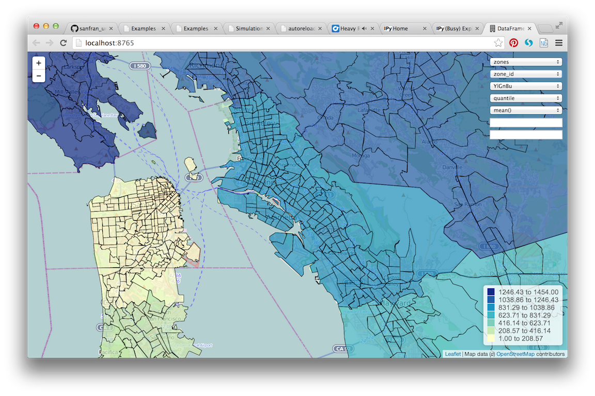

DataFrame Explorer
Introduction
The DataFrame Explorer is used to create a web service within the Jupyter
Notebook which responds to queries from a web browser. The REST API is
undocumented as the user does not interact with that API. Simply call the
start method below and then open http://localhost:8765 in any web browser.
See Exploration Workflow for sample code from the San Francisco case study.
The dframe_explorer takes a dictionary of DataFrames which are joined to a set of shapes for visualization. The most common case is to use a geojson format shapefile of zones to join to any DataFrame that has a zone_id (the dframe_explorer module does the join for you). Then set the center and zoom level for the map, the name of the geojson shapefile is passed, and the join keys both in the geojson file and the DataFrames. Below is a screenshot of the result as displayed in your web browser.

Website Description
Here is what each dropdown on the web page does:
The first dropdown gives the names of the DataFames you have passed
dframe_explorer.startThe second dropdown allows you to choose between each of the columns in the DataFrame with the name from the first dropdown
The third dropdown selects the color scheme from the colorbrewer color schemes
The fourth dropdown sets
quantileandequal_intervalcolor schemesThe fifth dropdown selects the Pandas aggregation method to use
The sixth dropdown executes the .query method on the Pandas DataFrame in order to filter the input data
The seventh dropdown executes the .eval method on the Pandas DataFrame in order to create simple computed variables that are not already columns on the DataFrame.
What’s it Doing Exactly?
So what is this doing? The web service is translating the drop downs to a simple interactive Pandas statement, for example:
df.groupby('zone_id')['residential_units'].sum()
The web service will print out each statement it executes. The website then transparently joins the output Pandas series to the shapes and create an interactive slippy web map using the Leaflet Javasript library. The code for this map is really quite simple - feel free to browse the code and add functionality as required.
To be clear, the website is performing a Pandas aggregation on the fly.
If you have a buildings DataFrame with millions of records, Pandas will
groupby the zone_id and perform an aggregation of your choice.
This is designed to give you a quickly navigable map interface to understand
the underlying disaggregate data, similar to that supplied by commercial
projects such as Tableau.
As a concrete example, note that the households table has a zone_id
and is thus available for aggregation in dframe_explorer. Since the web
service is running aggregations on the disaggregate data, clicking to the
households table and persons attribute and an aggregation of sum
will run:
households.groupby('zone_id').persons.sum()
This computes the sum of persons in each household by zone, or more simply, the population of each zone. If the aggregation is changed to mean, the service will run:
households.groupby('zone_id').persons.mean()
What does this compute exactly? It computes the average number of persons per household in each zone, or the average household size by zone.
DataFrame Explorer API
- urbansim.maps.dframe_explorer.start(views, center=[37.7792, -122.2191], zoom=11, shape_json='data/zones.json', geom_name='ZONE_ID', join_name='zone_id', precision=8, port=8765, host='localhost', testing=False)[source]
Start the web service which serves the Pandas queries and generates the HTML for the map. You will need to open a web browser and navigate to http://localhost:8765 (or the specified port)
- Parameters:
- viewsPython dictionary
This is the data that will be displayed in the maps. Keys are strings (table names) and values are dataframes. Each data frame should have a column with the name specified as join_name below
- centera Python list with two floats
The initial latitude and longitude of the center of the map
- zoomint
The initial zoom level of the map
- shape_jsonstr
The path to the geojson file which contains that shapes that will be displayed
- geom_namestr
The field name from the JSON file which contains the id of the geometry
- join_namestr
The column name from the dataframes passed as views (must be in each view) which joins to geom_name in the shapes
- precisionint
The precision of values to show in the legend on the map
- portint
The port for the web service to respond on
- hoststr
The hostname to run the web service from
- testingbool
Whether to print extra debug information
- Returns:
- Does not return - takes over control of the thread and responds to
- queries from a web browser